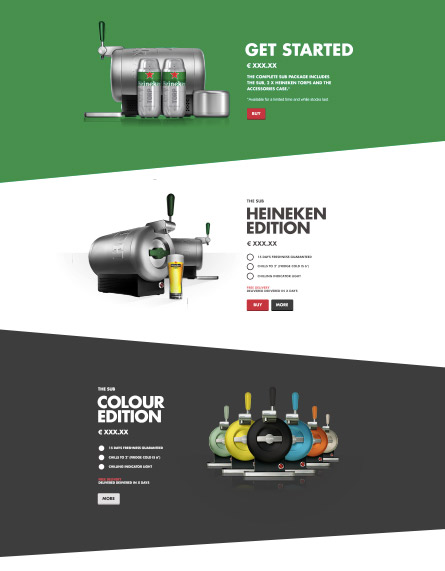

Math driven CSS
R/GA

Images for slopes
Different image for each color
Increased requests nr
Different image for responsive breakpoint
chapter 1
chapter 2
chapter 3
chapter 4
chapter 5
chapter 6
chapter 7
chapter 7
next
Tweet